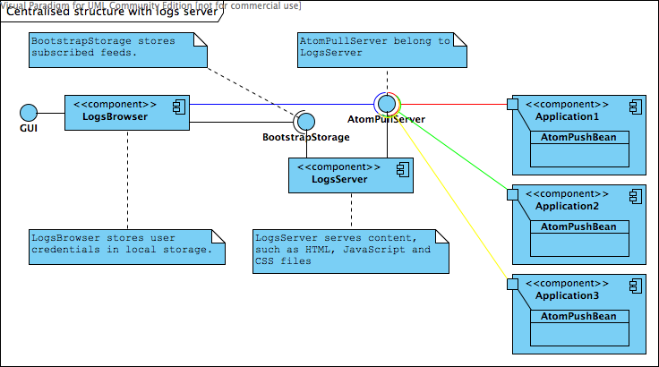
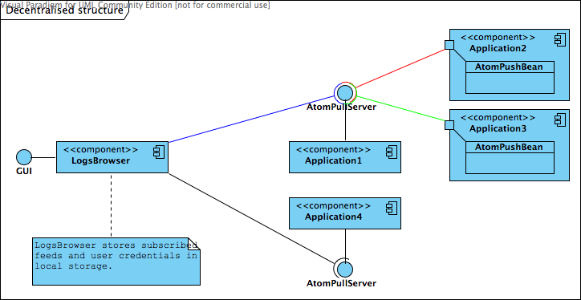
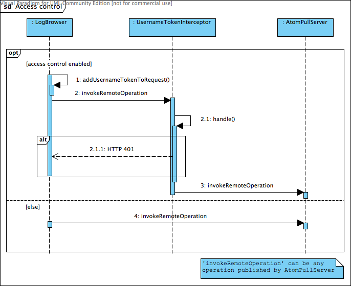
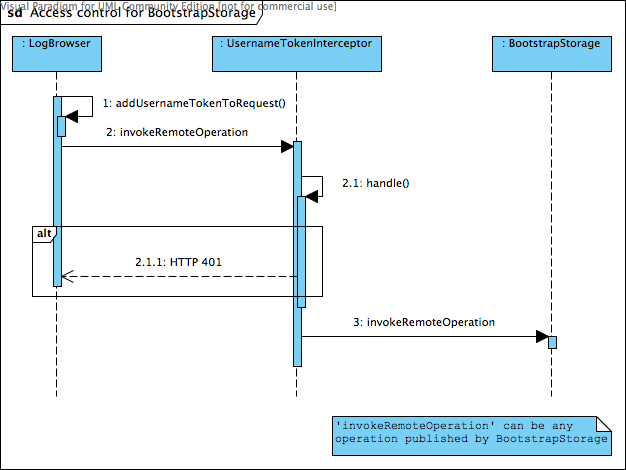
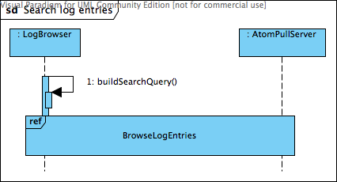

System architectural design
Definitions
- BootstrapStorage is service that provide list of user's subscribed feeds;
- LogsServer is independent application, which publishes
AtomPullServer and BootstrapStorage endpoints. It contains web server that delivers content, such as HTML, JS or CSS files;
Chosen System Architecture
There is only one application, which publishes AtomPullServer and BootstrapStorage endpoints in intranet – application has “administrative roles”. This application has to include web server for serving content. If you want add logging for another application in intranet, you must define AtomPushBean in this application. AtomPushBean will send events to AtomPullServer. User mange list of feeds by himself – he must know URL of endpoint to add new feed.

Advantages
- Natural solution;
- New features can be easily added;
- User's settings are stored remotely;
Disadvantages
- Application with “administrative roles” executes additional task - worse performance;
Discussion of Alternative Designs
Centralized structure with logs server
It is extension of previous concept. AtomPullServer and BootstrapStorage has been moved to independent application, LogsServer. Additionally LogsServer include web server. All applications communicate with LogsServer through AtomPushBean. This can be easily done by adding new module to CXF project, which will use AtomPullServer and BootstrapStorage and will compile to WAR package.

Advantages
- Natural solution;
- New features can be easily added;
- User's settings are stored remotely;
- Applications don't execute additional task;
- LogsServer can be easily updated to new version;
Disadvantages
- User must configure and deploy LogsServer (however it isn't a big deal, but it is an additional step)
Decentralized structure with logs browser based on standalone application
Logs browser is implemented using Swing library. User mange list of feeds by himself – he must know URL of endpoint to add new feed.

Advantages
- Logs browser can work offline;
- Subscribed feeds and user credentials can be stored locally;
- A load is evenly distributed;
Disadvantages
- It is hard to distribute and update application (logs browser);
- Java Runtime Environment has to be installed;
Decentralized structure with logs browser based on web application
User mange list of feeds by himself – he must know URL of endpoint to add new feed. Required files (HTML, JS and CSS) are retrieved from any available web server.
Advantages
- Logs browser can work offline;
- A load is evenly distributed;
Disadvantages
- Internet browsers block connection to different host than host specified in address bar;
- Local storage function, introduced in HTML 5, isn't adopt by all internet browser (ex. Internet Explorer);
Detail description of components
LogBrowser
The LogBrowser component is rich internet applications (RIAs). It will have complex graphical user interface with the possibility of adapting to the user's requirements. The LogBrowser component will be made using HTML, CSS and JavaScript for fully compatible with all leading web browsers.
Main feature of the LogBrowser component is browsing log entries, which are published by AtomPullServer components. Searching log entries is extension to browsing. It is done by building proper request, which is compatible with FIQL format. Additionally user's settings are saving (or optionally recovering) using the BootstrapStorage component.
Communication between components will be done with RESTful web services. Data exchange will be asynchronous - without blocking user' actions.
The LogBrowser component will support internationalization.
Technology
The component will be implemented based on Google Web Toolkit (GWT) library. Initially we planned to implement component using JQuery and JQuery UI library, but after analyzing complexity of the project and needs of the Apache CXF community, we decided to use GWT library. This decision has a couple of advantages:
- Component will be implemented using Java language. Next GWT will translate it into JavaScript language. It is the most important feature for Apache CXF community, that main programming language is Java. Additionally translated code is optimized for better performance.
- Unit tests for presentation layer are created using JUnit library. In the case of JQuery library, unit tests are created using QUnit library and JavaScript language. There are also problems with execute them (result depending on web browser).
- Big group of ready to use widgets. There is no need to create own custom widgets.
- Build in support for internationalization.
Storing settings
One of the feature of the LogBrowser component is to store locally user's settings (endpoint configuration, user credentials etc.). Unfortunately GWT doesn't support local storage. For this reason we will use DojoCore. More precisely, we will use DojoStorage module, which is part of DojoCore.
Dojo Storage allows web applications to store data on the client-side, persistently and securely and with a user's permission. It works across existing web browsers, including Internet Explorer, Firefox, and Safari. When included in a web page, Dojo Storage determines the best method for persistently storing information. On Firefox 2, it uses native browser persistence; on other browsers it uses a hidden Flash applet. With Flash 6+ being installed on about 95% of computers connected to the web, this makes the storage mechanism accessible for much of the web's installed base.
If web browser doesn't support any local storage solution, the LogBrowser component will store settings in operating memory. Settings will be available all the time during application life. If user close web browser and run application again, settings will be restored from the BootstrapStorage component.
Following diagrams show loading and modifying settings algorithm.


Access control
AtomPullServer and BootstrapStorage components publish their API through RESTful web services. Access control for AtomPullServer is optional. However access control for BootstrapStorage is required. On the other hand access control for these components will be implemented in the same way - using WSSE UsernameToken.
Data required for authorization will be send through HTTP header, for example:
POST /atom.cgi HTTP/1.1
Host: bob.example.com
Content-Type: application/atom+xml
Authorization: WSSE profile="UsernameToken"
X-WSSE: UsernameToken Username="bob", PasswordDigest="quR/EWLAV4xLf9Zqyw4pDmfV9OY=",
Nonce="d36e316282959a9ed4c89851497a717f", Created="2003-12-15T14:43:07Z"
When authorization fail, web service will response like this:
HTTP/1.1 401 Unauthorized
WWW-Authenticate: WSSE realm="foo", profile="UsernameToken"
Authorization process use UsernameTokenInterceptor.
Following diagrams show executed operation during access control for AtomPullServer and BootstrapStorage components.


Browsing, searching log entries
Following diagrams show executed operation during browsing and searching log entries.


AtomPullServer
The AtomPullServer component manage log entries. The component catch new log entries through registered interceptor. There can be defined many AtomPullServer in your application - each one catching different kind of log entry. Communication with the component is done through RESTful web service.
Currently the AtomPullServer component support only XML MIME type. JSON type support have to be added. Additionally FIQL format support have to be added for selected operations.
The component's RESTful web service contains operations like this:
- getXmlFeedWithPage - Operation return list of log entries. Results are paging. If request is in FIQL format, operation will return list of log entries, which matching to arguments. Operation will support XML and JSON MIME type.
- getNumberOfAvailableRecords - Operation return count of all log entries. If request is in FIQL format, operation will return count of log entries, which matching to arguments. Operation will support XML and JSON MIME type.
- getEntry - Operation return single log entry. Operation will support XML and JSON MIME type.
BootstrapStorage
The BootstrapStorage store user's settings. It is required to define access control for this component. Settings will be stored in external data source. We will deliver basic implementation for storing settings in XML file - user name must be unique, because it will be key. The BootstrapStorage component will not store user credentials, because of security issues. Communication with the component will be done through RESTful web service. There can be defined only one BootstrapStorage in your application.
The component's RESTful web service will contain operations like this:
- setSettings - Operation will save user's settings to external data source. Operation will support JSON MIME type.
- getSettings - Operation will load user's settings from external data source. Operation will support JSON MIME type.